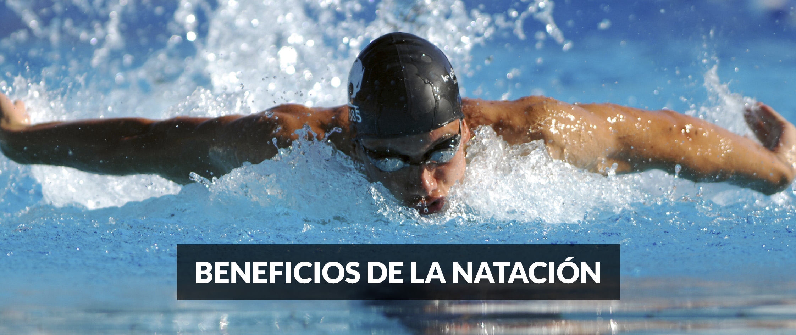
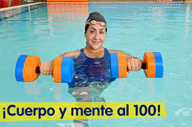
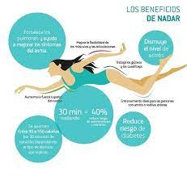

No cabe duda de que el deporte es salud. Realizar actividades físicas de forma regular y tener una dieta balanceada son los pilares de una vida saludable. Reducen el riesgo de enfermedades y alimentan la salud emocional.

No le des más vueltas: te conviene ejercitarte de forma periódica. Especialmente ahora. En un momento como el actual, marcado por largos meses de pandemia, practicar algún deporte de forma asidua es una gran terapia para combatir el estrés y la ansiedad. Y en este terreno de la práctica deportiva, la natación es una de las actividades de mayor resistencia, porque te obliga a moverte constantemente para mantenerte a flote y avanzar. Así que si resistes una hora de largos en la piscina, resistes cualquier cosa.
Pocos ejercicios son tan completos y divertidos como la natación. No solo combina el desarrollo físico con el mental, sino que también se adapta a los distintos niveles de forma y edades. Además, la natación es un aprendizaje indispensable para los niños, porque contribuye al desarrollo de su independencia y autoconfianza. Y es una herramienta de vida muy útil en caso de necesidad.
Si aún no te convencen del todo estos beneficios de la natación, aquí te compartimos los principales beneficios de esta actividad:
1. Potencia la salud mental y emocional
El oxígeno que utilizas para nadar activa tu cerebro y libera toxinas. Es más, al concentrarte en la respiración, tu cuerpo se relaja y se reduce la sensación de estrés. Esa inyección de endorfinas, la hormona del placer, también reduce tus niveles de ansiedad y mejora el estado de ánimo. En definitiva, aumenta tu sensación de bienestar.
2. Es un ejercicio completo
Nadar utiliza dos tercios de los músculos del cuerpo, potenciando la fuerza y la resistencia. Además, desgasta menos las articulaciones que otras prácticas deportivas, porque el cuerpo, al estar flotando, no recibe el impacto de superficies duras. Si practicas crol o espalda, tonificas fundamentalmente bíceps, tríceps, deltoides, glúteos, intercostales, abdominales y pectorales. Si optas por el nado a braza o mariposa, entonces ejercitas más los pectorales, deltoides, bíceps del tronco superior y cuádriceps e isquiotibiales del tronco inferior.
3. Mejora el aparato respiratorio y cardiovascular
Al nadar, consumes hasta un 10% más de oxígeno y tu corazón impulsa la sangre hasta un 18% más. Esto significa gozar de una mejor circulación sanguínea, ya que disminuye la frecuencia cardíaca y ganas un aumento en la resistencia cardiorrespiratoria. Créeme: tus pulmones y tu corazón te lo agradecerán.
4. Es un quemagrasa comprobado
En óptimas condiciones, y según la intensidad en la que se practique, con la natación puedes quemar entre 500 y 600 calorías por hora de práctica. Si buscas perder peso, añade este ejercicio a tu rutina.

5. Aumenta la flexibilidad
La natación utiliza el tren superior y el inferior de tu cuerpo. Esto flexibiliza las articulaciones y tonifica más los músculos, sobre todo los de la espalda. Por eso, es un ejercicio muy recomendado si sufres de mala postura, dolores de espalda, escoliosis o problemas de hernias. También está indicado para pacientes con asma.
6. Clave para el desarrollo de los niños
Es importante iniciar a los niños temprano en el mundo de la natación para que pierdan el miedo al agua y estén más seguros. Con este conocimiento, sabrán desenvolverse y no tendrán problemas en dos lugares muy frecuentados en nuestro país: el mar y la piscina.
7. Ejercicio aeróbico apto para todo el mundo
La natación no tiene barreras de edad. Una de sus ventajas es que se trata de una actividad ideal para grupos de población con ciertas condiciones, como por ejemplo los envejecientes, los bebés y las embarazadas. Lo importante es elegir la práctica que mejor se adecúe a nosotros, de acuerdo con un criterio médico.
8. Más allá de la natación
Tienes que elegir el estilo que más se ajusta a lo que necesitas, como crol, braza, espalda o mariposa, y también puedes integrar sesiones que vayan más allá de nadar para no aburrirte. En los últimos años, cobran relevancia y preferencia en las piscinas, por ejemplo, el aquagym o el aquabiking (spinning dentro del agua): ambas son modalidades de ejercicios aeróbicos divertidas, que puedes combinar en tu rutina.
Potencia tu salud incorporando la natación como parte de tu rutina de ejercicio. Recibirás todos estos beneficios y, de paso, te refrescarás.
